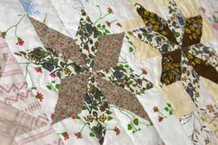

Beställ ditt lapptäcke här!
Jag har sedan länge sytt lapptäcken till vänner, bekanta och mig själv.
Nu är den marknaden mättad och jag erbjuder mina alster till försäljning.
Du kan också välja storlek, stickmönster, färg, mellanlägg och lappmönster.
Förr kunde ett lapptäcke innehålla tygbitar från ett helt liv; skicka mig ett tyg
som bär minnen med sig och jag tar med det i ditt lapptäcke! Min specialitet är att jag stickar (qviltar) täckena för hand på min stickstol från sent 1800-tal. Täckena blir mycket orginella tack vare mitt öga för "omöjliga" färger.
Johanna Söderberg
